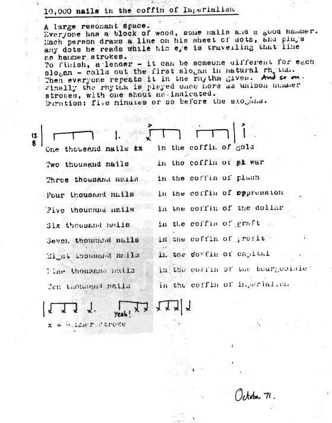

Sunday, July the 3rd, 2011
back to: title, date or indexes
Here is the score of Cornelius Cardew's 1971 piece 10,000 Nails In The Coffin Of Imperialism. (Click on the image for a slightly larger view.) Note particularly that “yeah!” at the end.

Cardew submitted the piece for publication in the magazine Aspen, but it was rejected by the editor, American composer Tom Johnson, for being “just too out of keeping with the issue as a whole”. How different the world might be, forty years later, if the piece had been published! All over the world, proletarians would have pored over the latest issue of Aspen in their millions, seized on the revolutionary implications of Cardew's score, and begun the inevitable historical process of driving those ten thousand nails into the coffin of imperialism, thus ushering in a bright new Maoist Utopia of political re-education camps and mass famine, where “workers would machine-gun bosses into bloody pits”, in the words of a poem in praise of Cardew's political mentor Hardial Bains. Er… yeah!